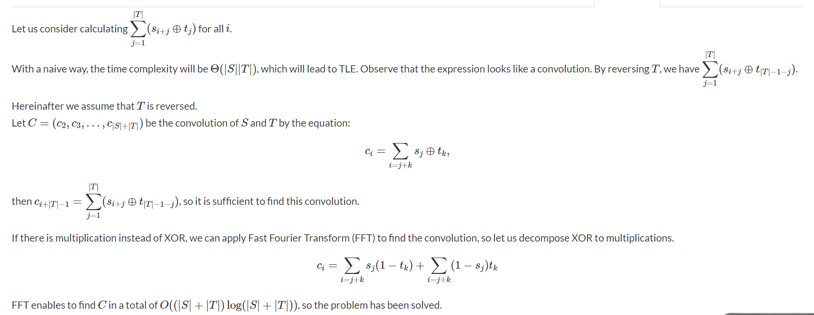

Fast Fourier Transform
Template
// FFT Template
const int N = 1 << 18; // depends on the modulo
const int mod = 998244353; // for modulo like 1e9 + 7,use CRT
/* FFT section */
void add(int &a,int b) {
a += b;
if (a >= mod) a -= mod;
}
void sub(int &a,int b) {
a -= b;
if (a < 0) a += mod;
}
int mul(int a,int b) {
return 1ll * a * b % mod;
}
int binpow (int a,int b){
int res = 1;
while (b){
if (b & 1) res = mul(res,a);
a = mul(a,a);
b >>= 1;
}
return res;
}
int inv (int a){
return binpow(a,mod - 2);
}
typedef vector<int> poly;
int W[N],I[N];
void init_fft(){
for (int i = 0 ; i < N ; i++){
int exp = (mod / 2 / N) * i;
W[i] = binpow(3,exp);
I[i] = binpow(3,mod - exp - 1);
}
}
void FFT (poly &a,bool invert){
int n = a.size();
for (int i = 0 ; i < n ; i++){
int x = i;
for (int j = 0 ,k = log2(n) - 1 ; j < k ; j++,k--){
if ((x >> j & 1) != (x >> k & 1)){
x ^= (1 << j);
x ^= (1 << k);
}
}
if (i < x) swap(a[i],a[x]);
}
for (int k = 1 ; k < n ; k <<= 1){
for (int i = 0 ; i < n ; i += k + k){
int idx = 0;
int gap = N / k;
for (int j = 0 ; j < k ; j++,idx += gap){
int x = a[i + j];
int y;
if (invert){
y = mul(a[i + j + k],I[idx]);
}
else {
y = mul(a[i + j + k],W[idx]);
}
add(a[i + j],y);
a[i + j + k] = x;
sub(a[i + j + k],y);
}
}
}
if (invert){
int m = inv(n);
for (int &x : a){
x = mul(x,m);
}
}
}
poly operator * (poly a,poly b){
int n = a.size() + b.size() - 1;
int m = (2 << (int)(log2(n)));
a.resize(m);
FFT(a,0);
b.resize(m);
FFT(b,0);
for (int i = 0 ; i < m ; i++){
a[i] = mul(a[i],b[i]);
}
FFT(a,1);
a.resize(n);
return a;
}
To use the above template just call the init_tft() function and use multiplication
operation as above.
Application
Exercise 1 : Atcoder ABC196F
Link : https://atcoder.jp/contests/abc196/tasks/abc196_f.
Brute-force solution
ll ans = oo;
for (int i = 0 ; i < s.size() && i + t.size() - 1 < s.size() ; i++){
ll cost = 0;
for (int j = 0 ; j < t.size() ; j++){
if (t[j] != s[i]) cost++;
}
ans = min(ans,cost);
}
// Time complexity O(|S| * |T|)
We define cost[i] as the cost if we start from index i. We can use FFT to reduce the time complexity to O((s + t) * log(s + t)). Detailed Solution :

Submission : https://atcoder.jp/contests/abc196/submissions/25284257.
Exercise 2 : RCC2015 - Round 1 - Hash
Link : http://www.russiancodecup.ru/en/tasks/round/35/E/.
DP formulation :
dp[i][j] the number of segments with length 2^i have modulo j.
dp[i][j] -> dp[i + 1][j * 2^i + k] += dp[i][j] * dp[i][k].
Time complexity : O(M^2 * log)
=> We can use FFT to optimize it into O(M * log * log).